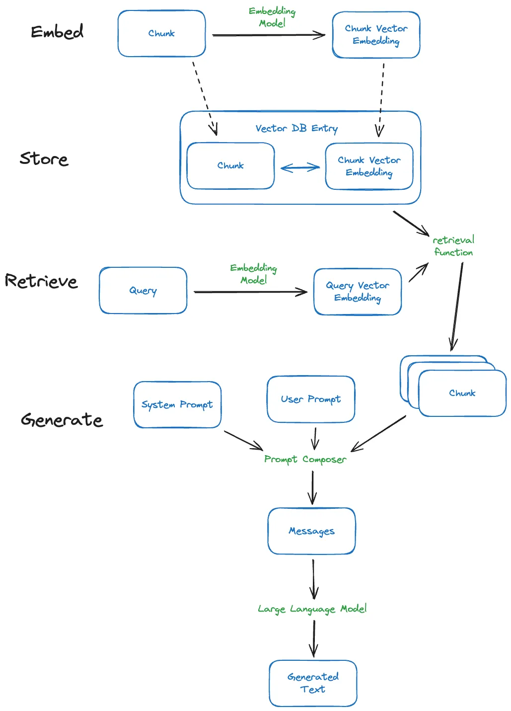

written by Eric J. Ma on 2024-01-15 | tags: embedding models retrieval augmented generation semantic search text generation vector databases llamabot documentstore sentence transformer
In this blog post, I debunked the misconception that embedding models must match the text generation model in retrieval augmented generation (RAG). I explained how these models are decoupled, with the choice of embedding affecting only the quality of content retrieved, not the text generation. I also shared my preference for SentenceTransformer due to its cost-effectiveness and performance. Finally, I updated LlamaBot to reflect this understanding, allowing for more flexible model composition. Curious about how this could change your approach to RAG? Read on!
This is a misconception I used to have: I assumed that my embedding model had to be from the same provider when doing retrieval augmented generation. For example, if I were using an OpenAI model like gpt-3.5-turbo, I would assume that if I wanted to do RAG, I would need to use the OpenAI embedding model. This turns out to be untrue!
We embed a document to perform a semantic (or vector similarity) search, a distinct step from text generation. As long as two texts are embedded using the same model, their embeddings are comparable. Using embeddings and semantic search, we are retrieving a collection of documents (or document chunks) purportedly relevant to a query text we provide. Vector databases usually store the text and embedding next to one another, or at least link them together, so that once we know which embedding is similar to our query, we can also learn what text was associated with that embedding.
Once we have that text retrieved, the rest of what we do is to use that text as part of the prompt that we provide to an LLM, which can generate text without using the embeddings, just the text. See the diagram below to make this clear:

In this way, embedding models are decoupled from the text generation model — the latter does not use the output of the former. But they are nonetheless linked by the text associated with the embedding.
Will embedding choice affect our text generation model? For RAG purposes, the short answer is "probably not directly." But the long answer is, "It's a bit more complicated."
To start, we should dispel the notion that our choice of embeddings will directly affect the performance of our text generator. As my diagram showed, the retrieval function in the most common RAG setup separates text generation and embedding usage. At most, the embedding choice will affect the quality of our similarity measure, affecting the kind of content we retrieve from the vector database and the content we pass to the text generator.
I prefer to have sane defaults in life to handle most Pareto-distributed scenarios. The same applies here. The most important thing to look at here is which embedding model has the best performance, measured along a few axes. As a pragmatic start, I would consider the following criteria:
A detailed comparison is likely the topic of a different blog post. However, after test-driving a few embedding models (OpenAI's text-ada-002, Mistral's embedding model, and the SentenceTransformer that ChromaDB uses by default), I now use SentenceTransformer on the basis that it is the cheapest -- it is free and runs on my hardware. It is also the (sane) default encoded within LlamaBot's new and shiny DocumentStore.
Speaking of LlamaBot, I updated it to reflect this new knowledge. In doing so, we can now freely compose embeddings from various models with text generation performed by other models. Come check it out!
@article{
ericmjl-2024-your-embedding-model-can-be-different-from-your-text-generation-model,
author = {Eric J. Ma},
title = {Your embedding model can be different from your text generation model},
year = {2024},
month = {01},
day = {15},
howpublished = {\url{https://ericmjl.github.io}},
journal = {Eric J. Ma's Blog},
url = {https://ericmjl.github.io/blog/2024/1/15/your-embedding-model-can-be-different-from-your-text-generation-model},
}
I send out a newsletter with tips and tools for data scientists. Come check it out at Substack.
If you would like to sponsor the coffee that goes into making my posts, please consider GitHub Sponsors!
Finally, I do free 30-minute GenAI strategy calls for teams that are looking to leverage GenAI for maximum impact. Consider booking a call on Calendly if you're interested!